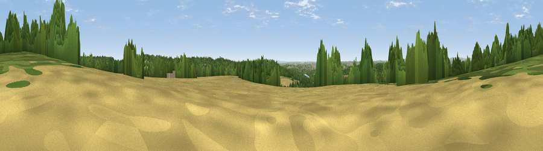

Viewpoint near Underwood
#36557 in England · top 66% of its area beats it · near UnderwoodWhere it is
The exact computed spot (SK 49075 51125). Click the marker for map links.
The view, rendered

A 360° render of this exact spot computed from the terrain model, tree cover and land cover — summer colours, afternoon light, calibrated against photographs of famous viewpoints. Real trees, hedges and buildings will differ in detail.
The panorama
Grey silhouette: terrain skyline in each direction (720 bearings, Earth curvature and refraction included). Dashed green: skyline with trees (+15 m) and buildings (+8 m) as obstacles. Blue strip: how far the ground is visible on each bearing.
Where the view opens
Wedge length = distance to the farthest visible ground on that bearing (vegetation-aware). Rings at 10, 25 and 50 km.
What fills the view
40% woodland · 33% cropland · 21% grassland · 5% built-up
Angular shares of the visible panorama (visual magnitude), not map area. Landscape diversity 0.54 (0–1 Shannon).
Key numbers
More beautiful places nearby
The staircase of upgrades: each row has a higher view potential than everything closer. Driving times are estimates from straight-line distance, calibrated against real road routing — check an actual route before setting out.
| Place | Direction | Drive | Score |
|---|---|---|---|
| Viewpoint near Newstead | ENE · 2 km | ~6 min | 53.4 |
| Viewpoint near Greasley | S · 3 km | ~7 min | 56.2 |
| Viewpoint near Strelley | S · 10 km | ~19 min | 62.6 |
| Viewpoint near Arnold | ESE · 11 km | ~21 min | 64.1 |
| No Man's Lane | SSW · 14 km | ~26 min | 65.8 |
| The Tors | W · 14 km | ~26 min | 68.9 |
| Crich Stand | WNW · 15 km | ~27 min | 73.0 |
| Alport Height | W · 19 km | ~32 min | 73.9 |
53.05513, -1.26928 · source: screening · position refined by local search. Computed location — check access rights before visiting.